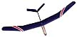

click on any image for a larger view and more notes
|  | Construction is conventional balsa and super glue, with some composites used for strengthening. Covering is transparent blue Micafilm and Balsaloc, trimmed with Monokote. The airfoil is Selig's 4083. It is the first time I have used this airfoil, but so far I am very pleased. |
| The radio gear is not exotic by today's standards. No computers, no 5 gram servos. I had it available, and didn't feel like spending a bunch of money on new gear to save a few grams. |
| Control is via a removable v-tail based on an original design I have been evolving over the years. | ||
| I have also tried this Compressed Air Powerpod with some success. Obviously though, the weight and drag penalty were significant. | ||
|
Note: as of June 2017, this plan is now offered for $12, through the Flying Models plans service. |
Copyright 1998-2017, Thayer Syme. All rights reserved